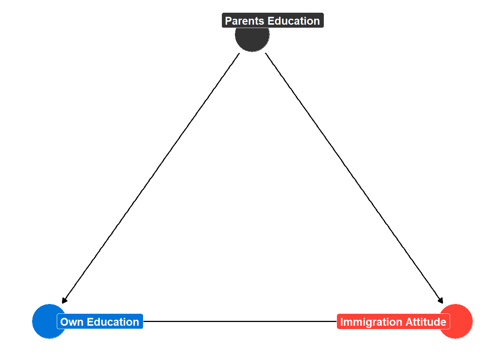

5 Results/Analyses Section
5.1 Goals
You will naturally discuss the results of your analyses after discussing your data. This section is fairly straightforward in that its central goal is to tell the reader what you have found and how this relates to your hypothesis/hypotheses. What follows are some general points on the content of this section.
5.2 Some More Specific Points
5.2.1 Structure in the same order as your hypotheses
If you have more than one hypothesis, then you should discuss them in order: analyses relevant to H1, then analyses relevant to H2, etc. It may make sense in this case to create subsections for each test, but that is not always necessary.
5.2.2 Restate your hypotheses when you start discussing them
Remind your reader about your expectations when you start discussing your analyses and be clear about what would fit with those expectations in the analysis/es you are showing.
So, to return to the running example of whether accusations of ulterior motives undermine the influence of party cues, I might begin this section by writing something like:
I argued in Hypothesis 1 that receiving an in-party cue should result in greater policy support among partisans. Table 1 provides the results of a regression model where policy support is regressed receiving a in-party cue or whether they did not (baseline condition). A positive coefficient would thus be consistent with Hypothesis 1. And, indeed…
Then, I might write something like this when discussing a secondary hypothesis:
Table 1 shows that party cues mattered. However, in Hypothesis 2 I argued that this effect would be conditional, i.e. it would be smaller when the party was described as motivated by ulterior goals. I test this claim by including an interaction term between Variable1 and Variable2; see Model 2 in Table 1. A negative coefficient on the interaction term would be consistent with my hypothesis. And, indeed, Table 1 shows…
Doing this makes sure you and your reader are on the same page.
5.2.3 Go beyond “statistical significance”
In interpreting your results, you might be tempted to just say “well, there is a statistically significant (or insignificant) effect of the independent variable” and leave it at that. But this does not tell the reader very much. And, indeed, it elides the more important question of substantive significance as one could obtain an estimate that one is confident is more than statistical noise but which is unimportant.
When writing up your results, discuss the direction and magnitude of results with some level of specificity. One way to do this is to interpret the direction and magnitude of the effect implied by the coefficient in your model. So, for instance, if the coefficient is 0.8, you might say: “for every one unit increase in my variable, the DV is expected to change by 0.8 [DV units] on average”.1 It if often a good idea to then supplement such a statement with predictions from the model: “Based on this model and its results, we would expect that someone at the minimum of X to score a 2 on the scale, while someone at the maximum of X would score a 6” (or something like that). One can also do this with logistic models using average marginal effect estimates and/or predicted probability estimates. Incorporating a figure to show these changes is also a wonderful idea although it is not always needed.
1 Well, if the IV is continuous. If it is a binary or categorical variable, then you would discuss this as a difference in means test: is the mean in category A different from the mean in category B? And, of course, we would not use quite the same language when describing a logistic regression model since the coefficients of that model are on the hard to communicate log of the odds (logit) scale. A focus on average marginal effects and predicted probabilities would be more useful there.
2 Moreover, a statistically significant relationship does not necessarily mean that your hypothesis is true. Maybe your DV is actually causing your IV (e.g., “reverse causality”). Or perhaps you have an omitted variable that confounds the relationship. Meanwhile, an “insignificant” result could result from measurement error or a small sample.
One thorny subject here is substantive significance. The p-value associated with a regression coefficient might be small leading you to “reject” the null hypothesis. But, that doesn’t mean the effect in question is particularly important! We can precisely measure small effects with enough data after all.2 It is thus a good idea to give some consideration to whether the effect that you are observing is “meaningful” or “substantively” important. What characterizes a “substantively” important finding, however, is not always clear. This can depend on the topic in question and our prior knowledge about it. Consider a study investigating variation in the percentage of votes cast for an incumbent party that finds that a one unit change in X leads to an expected gain of 1% more votes. If the incumbent party in the context of this study typically wins elections and does so by 45-50% on average, then a 1% change due to X is probably irrelevant in the “real world”. However, if real elections are typically within 1-3% on average, then a 1% change due to X could mean a different winner and hence a represents a “substantive” or “important” effect! So, there is no straightforward answer here. This is one reason why I suggest incorporating predictions from your model into the discussion of your results as these may aid in interpreting substantiveness in light of your knowledge of this case and the literature regarding it.
Discussing the substantive importance of coefficient can be tricky. I discuss this point in more detail in a chapter in the final section of this book.
5.2.4 Discussing Control Variables
You’ll likely have various control variables in your model (unless you are analyzing an experiment). How much attention should you give them in your discussion of results? The answer is “probably not much if any”. Recall that the standard justification for why we “control” for other variables is to avoid statistical bias when estimating the relationship between the predictor variable we care about and the DV. In other words, we have some reason to believe that the “control” variable causes both our main IV of interest and the DV such that failing to include it in the model would yield faulty conclusions about the relationship between that main IV and the DV. We are not including the control variable in the model, in other words, because we actually care about its direct relationship with Y…so why should we then spend a lot of time talking about it? Indeed, every word you spend on talking about the “controls” is a word you could be using to better set up your research question, or justify your theoretical argument, or elaborate on the implications of your results, i.e., the stuff your readers will most care about.
There is an additional reason why you might want to limit your attention to the control variables: they don’t necessarily tell you what you think they’re telling you (which can lead your discussions into error-prone directions) and what they are telling you may not be very interesting on its own.
Consider the following simplified causal diagram:
The diagram above shows a set of theorized causal relationships wherein a person’s immigration attitudes (DV) are influenced by their own educational attainment (main IV) and a potential confounder (Parents Education). Parents Education is thus theorized to influence Immigration Attitudes and to do so, at least partially, because of its influence on a person’s Own Education. If our interest is on obtaining an unbiased estimate of the relationship between Own Education and Immigration Attitude, then we should include Own Education and Parents Education in our resulting statistical model.3 The coefficient for Own Education would tell us about the relationship between Own Education and Immigration Attitudes “controlling for” or “after adjusting for” Parents Education. In essence: if we compared people with different educational backgrounds but whose parents had the same educational attainment, then what is the difference in immigration attitudes that we’d expect to see?
3 There are plausibly other confounds out there of the education/immigration relationship, but I am keeping the figure simple. Hainmueller and Hopkins provide a relatively recent review of the literature on immigration attitudes.
What would the coefficient for “Parent Education” represent in such a model? Well, it would provide us with an estimate of the relationship between this variable and the DV that is unrelated to “Own Education” (e.g., the influence of this variable after adjusting for differences in Own Education). Stated differently: it is an estimate of the relationship between “Parent Education” and “Immigration Attitudes” that emerges due to other mechanisms/mediators besides “Own Education”. For instance, it might represent the influence of Parent Education on Immigration Attitudes that works through a person’s ideology, or their self-interest, etc. (unless those things are also controlled in the model!). It is thus not an estimate of the total relationship between Parents Education and Immigration Attitudes but the relationship that is left over after addressing one of the mediator’s of this variable’s relationship with the DV. This coefficient is thus a “biased” estimate of the total relationship between this variable and the DV. Specifically, it suffers from what is known as post-treatment bias. Any resulting discussion of this coefficient that does not take this fact into account would thus fall into error…but why risk error if this topic is kind of besides the point to begin with?
So, in general, I would tell you to focus on just the variable(s) relevant to your hypothesis/es and interpret them. There might be some reason to deviate from this rule if something really surprising or odd turned up, but that is something we would need to discuss with each other.
5.2.5 Talking about R2
Students writing the BAP can sometimes seen quite preoccupied with the R2 of their model and whether it is “too low” or not. You probably don’t need to worry much about that and, even, have to talk about the R2 at all. Let me explain why.
The first reason why talking about R2 is not usually necessary concerns the purpose of what you’re doing. Regressions can be used to try and build strong predictive models, e.g., to build a model to try and make accurate electoral forecasts. In that context,R2 may be quite relevant as a model that doesn’t explain much variation in existing data may generate inaccurate predictions for new data.4 However, your goal is likely more focused on using a regression model to say something about a particular variable and its relationship with Y: to describe that relationship and, contingent on research design considerations and assumptions about omitted variables, to say something about whether X causes Y. R2 is not particularly relevant for that latter purpose. The more important things to focus on are the coefficients for the variables core to your hypotheses, the predictions they generate, and the (un)certainty surrounding them (e.g., confidence intervals and standard errors).
4 Although, the reverse is also true. A highly predictive model with one set of data might not generate accurate predictions on a different data set!
Second, R2 has some potential issues that have led some to question its validity as a measure of model fit to begin with. See here for a deeper dive.
- It assumes a linear model, which means that you can get a very low R2 even with a very strong relationship between X and Y if the relationship is non-linear and you have failed to account for that aspect of the data.
- You can theoretically get a “good” or “high” R2 with a silly model. For instance, if I were to regress a person’s height on the height of their parents (as measured before the parents had the child), I’d probably get a decent R2 value. Height, after all, is one of the most heritable traits we have. If I were to reverse that regression, I’d still get a good R2, even though a child’s height cannot go back in time and cause their parents’ height! Or, as an alternative example, if I were trying to explain a person’s vote choice, I could survey them five minutes beforehand and ask them whom they intended to vote for. Including that variable in a resulting model would certainly lead to a very high R2, but it wouldn’t tell me anything about why they voted for the party/candidate they voted for because the high R2 is emerging because you’ve included an IV in the model that is essentially the same as the DV!
- R2 values are inherently sample dependent. If I field a survey and estimate a model and then you field a separate survey with the same exact measures and run the same exact model we’d expect the R2 to be non-identical (although, hopefully, quite similar).
- Finally, what counts as a “high” R2 can be field specific. R2, in essence, tells you how much systematic variation in Y you are capturing with your models versus residual noise…but some Y variables are simply noisier than others. Individual human behavior is much more noisy than, say, the behavior of molecules under controlled conditions. A discussion of whether R2 is high or low must then proceed from knowledge of how much variation researchers can typically explain with their models in the domain of study rather than as a blanket statement.
R2 statistics can have some value. In particular, they are helpful in comparing models using the same data. If you run one model and then another which includes an additional variable, then it can make sense to talk about how this did or did not increase the variance explained. However, to go back to point one, even that is not necessarily the relevant consideration.
The point is not to never talk about this statistic. Rather, you shouldn’t use it as a heuristic for judging the quality of your, or other’s research or, at least, use it by itself to make those judgments. Research quality is dependent on the clarity of theory and its relationship to existing knowledge, the nature of the sample, how variables are measured, and what goes into the model. R2, as well as other model fit statistics, can be useful in this endeavor, but only as one piece of evidence.